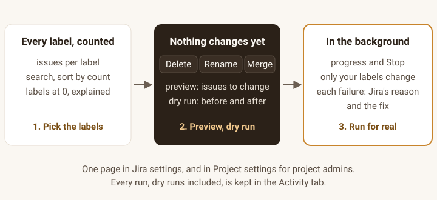

Labelkeep for Jira
See every label on your Jira site with its issue count, and the duplicate spellings. Delete, rename or merge one on every issue the app can access, at once: previewed, dry-run first, and every failure explained. Project admins can clean up their own project without the global Bulk Change permission.
Free. Every feature, every site size.
Get it on the Atlassian Marketplace
Not on the Marketplace yet. Labelkeep has not been submitted to Atlassian, so it can't be installed today; this button will link to the listing once it is live. For a note when it is, email support@ochrestack.com.
For Jira Cloud (Atlassian Forge). Not for Jira Data Center or Server. English only. At install a Jira site admin approves three permissions: read issues, change issues, and the app's own storage inside Atlassian (why each).

- Pick the labels from the list of every label with its issue count.
- Delete, rename or merge: the preview says how many issues will change, and the dry run shows examples of the before and after, changing nothing.
- Run for real from the dry-run result, in the background with progress and Stop. Every failed issue is named, with Jira's reason and the fix.
What it does
- For Jira admins and project admins. Jira admins get a page in Jira settings for the whole site. Project administrators get the same page under Project settings, limited to the issues they can see in their project, and don't need the global Bulk Change permission.
- Every label, with its issue count. Search as you type; sort by name or by count. Labels Jira still suggests but no visible issue carries are listed at 0, with the likely reason.
- Possible duplicates, found for you. Labels that differ only in capital letters, hyphens or underscores, like
checkout,check-outandCheckout, are grouped with each spelling's count and a Merge into "checkout"… button. The rule is exact, soiosandioare never proposed. - Delete, rename or merge. Delete removes the selected labels from every issue the app can access; rename replaces one label; merge folds several into one. Up to 50 labels per operation.
- Preview, dry run, then Run for real. You see how many issues would change before anything does. Dry run is on by default: it shows examples of the before and after and changes nothing. A finished dry run offers Run for real, with a fresh preview.
- Only the labels you picked change. Each edit names only the labels removed and the one added, so other labels on the issue are never sent, even one a colleague adds mid-run. Matching is exact:
Checkoutandcheckoutare different labels. - In the background, with Stop. Runs go in small batches on Atlassian's own queue, so you can close the page. Stop lets the batch in progress (at most 20 issues) finish, then says how far it got and how many issues were not touched.
- Every failure explained. One issue failing never stops the others. The summary lists each failed issue with what Jira said and how to fix it, for example which role needs Edit Issues in that project's permission scheme.
- On the record. The Activity tab lists every operation, dry runs included: who, when, which labels, how many issues changed or failed, and whether it was stopped.
What a run tells you
Summaries from one test run on a real Jira Cloud site (5 November 2026), as the app wrote them, with the test labels shortened:
Dry run of renaming "old" to "new" in LME2E: 30 issues would change. Nothing was changed. A second search after the first pass found no further issue with the selected labels.
Finished merging "dup1", "dup2" into "merged" in LME2E: 40 issues changed. A second search after the first pass found no further issue with the selected labels.
Stopped on request while removing "big-trash" in LME2E. 20 of 300 issues checked before it stopped: 20 issues changed. The other 280 issues were not touched. Run the operation again to finish.
Each test label also began with the run's number; LME2E is the test project. Afterwards the labels on every issue were read back from Jira: after the stop, exactly the 20 reported issues had lost the label.
What Jira already does, and what you get
Good to know: a careful Jira admin can do the same natively with ADD then REMOVE bulk passes of 1,000 issues each and the global Bulk Change permission; Labelkeep is one previewed operation with per-issue failure reasons, zero-issue labels shown, and an activity log, not a magic fix.
No undo. Every change is in each issue's history and in the Activity tab, but Labelkeep cannot roll an operation back. That is why dry run is on by default.
Price
Free, with every feature, for any number of users. Installed and managed through the Atlassian Marketplace once the listing is live.
Who can use it
| Who | Sees | Can change |
|---|---|---|
| Jira administrators | Every label on the site, including labels with no visible issues | Every issue the app can access (Jira settings page), or one project (its Project settings page) |
| Project administrators | Labels on the issues they can see in the projects they administer | Only issues in those projects that they can see |
| Everyone else | A message naming the permission they need | Nothing |
Permissions are checked on the server on every request. A project admin's counts, previews and background runs use that person's view of Jira, so issues an issue security level hides from them are never shown or changed; the summary says how many were left out. The edits are made by the app, so an issue's history shows the app as the editor; the Activity tab records who started the run.
Documentation
The step-by-step guide is the Labelkeep quick start.
Install
- In Jira Cloud, open Apps > Explore more apps, search for Labelkeep (once the listing is live) and choose Get app.
- A site administrator approves the permissions below.
- Open Jira settings > Apps > Labelkeep. Project administrators open Project settings > Apps > Labelkeep in their project.
| Permission (scope) | Used for |
|---|---|
read:jira-work | Finding issues by label, reading labels and checking permissions. For project admins, also reading issues as them in the background, so nothing hidden from them is shown or changed. |
write:jira-work | Changing labels on issues |
storage:app | The activity log and running operations, kept in Forge storage inside Atlassian |
Questions
How fast is it?
On our test site, with the settings every run from the page uses, removing a label from 280 issues took 37 seconds, and a dry run that found nothing to change finished in 4 seconds. A run of 30 to 40 issues has not yet been timed separately with those settings, and nothing larger than 300 issues has been measured. Progress shows throughout, and you can stop at any time.
Will watchers get an email for every changed issue?
They might. Labelkeep asks Jira not to notify watchers on every edit, but whether Jira honours that for the app has not been verified. Try a dry run and a small live run first.
Why is a label still listed after I deleted it?
With a count of 0, it is on issues the app can't see (archived projects, an issue security level, or a permission scheme without the app's role), or only in Jira's suggestions; Jira Cloud has no API to delete a label itself. With a count above 0: search-index lag of a few seconds, or failed or left-out issues, which the summary lists. The page says which applies.
Some issues failed. What do I do?
Fix what the "How to fix" column says, usually a permission in that project's permission scheme, then run the operation again. Issues already changed need no change.
Does a Jira admin see issues they personally can't browse?
Yes. Jira administrators work with the app's view of the site. Project administrators work with their own view. Only one operation runs at a time on a site, even if two admins confirm at the same moment.
Known limits
- No undo. Use the dry run first.
- Every issue the app can access, not every issue: not archived projects, issues behind an issue security level that excludes the app, or projects whose permission scheme removed the app's role. Labels at 0 can't be deleted.
- Possible duplicates are found by an exact rule (case, hyphens, underscores), not by spelling similarity; use the search for typos.
- Only Jira's native Labels field: no custom label fields, Confluence labels, or Jira Data Center or Server. Labels can't contain spaces and are at most 255 characters.
- Label counts are read fresh each time the page opens, not cached, so on a large site the list takes a while to fill. Operations don't wait for it.
- No scheduled clean-ups and no CSV export.
How we tested
A test suite installs Labelkeep on a real Jira Cloud site, creates issues through Jira's API and runs operations through the app itself. Its last run, on 5 November 2026, passed: a dry run, rename, merge and delete on 60 issues; a rename, a stopped delete and the rest of that delete on 300 more; every issue's labels read back and checked; two simultaneous starts with exactly one accepted; all eight runs in the activity log, newest first. Over 120 automated tests cover batching, resuming without counting an issue twice, the permission rules, dry run, Stop and the duplicate rule; against a model of Jira with 5,000 issues and labels with quotes, emoji and other awkward characters, only the selected labels ever changed.
Not yet covered: the page itself has not yet been opened by a person (every operation behind it has run on a real site; it will be before the listing goes to Atlassian), a real issue security level hiding an issue from a project admin, watcher emails, and labels on more than 300 issues.
Privacy
Your data stays in Atlassian. Labelkeep runs on Atlassian Forge, calls only your own site's Jira API, and has no permission to reach any other server. No analytics, no telemetry. Forge storage holds the activity log and running operations: label names, the keys of example and failed issues, counts, the account IDs of who started or stopped a run, and timestamps. See also the privacy policy.
Support
Email support@ochrestack.com with your site URL, what you ran (it is in the Activity tab) and the summary text. We answer every message. Bug reports and feature requests are welcome at the same address.